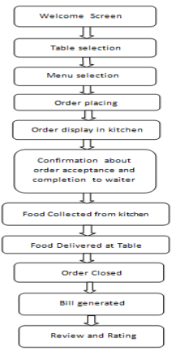

Problem needs to be solved
In present days, the main problem has become to have access to
food during the pandemic of Covid 19. At this point, people are
struggling between the second wave of COVID-19 where citizens
are being more cautious about stepping out of their house. While
people are maintaining social distancing by a large extent,
there are certain cases where people are needed to go outside
to acquire food. At that point of time, they can be in contact
with this virus. In this case, the global economy is deteriorating
significantly and restaurant industry in the country of Australia
is facing a great loss. Therefore it is the responsibility of Australians
to save its economy. In this proper solution to this problem is needed.
Overview
In order to recover from this situation, smartphone applications for food
ordering can be developed through which the restaurant can update its
traditional menu ordering system with a smart menu ordering system
(Cha and Seo, 2020). In this manner, the users or the guests who
are coming to the restaurant do not have to touch their mem card which
can contain COVID virus. At this point, this application can assist the
restaurants to embrace zero-contact service to people of Australia for
combatting this deadly pandemic.
Motivation
It is fortunate that Australia country is one the verge of being in a better
position, whereas the other countries are facing the second wave. At this
point, people of this country still need to take precautions carefully in
order to avoid the extensive spread of this pandemic. At this point, digital
innovation is that particular aspect which can assist people in maintaining
social distance from each other. In this regard, digital menu ordering systems
can help them in adhering to co contact principles throughout the pandemic.
In addition to this, people can take control of their activities while going
out to any restaurants.
Target market
After severe consequences of COVID-19, people have started going out again.
In this case, the main target market for this application is mostly people
of Australia who are eager to eat any restaurant while following precautionary
measures for obstructing the spread of COVID-19. Under the circumstances, place
demographic attributes can be considered as the main target since people of
any age and employment status or any other aspects can come to restaurants.
In addition to this, the other customer group can be identified as a target
market who have a smartphone. Since the entire project revolves around smartphones,
so people of Australia with smartphones can be a greater target market for
this application.
Technical specification
Hardware requirements
There are external hardware devices can be utilized in this proposed application.
Two mobile phones and a computer must be used for the proceeding of this application
related to the restaurant menu ordering system. Each of the devices should be immune
to COVID-19 spread and proper caution must be used while operating these devices.
The smartphones will be used for two end user requirements (core.ac.uk, 2021). The
first one can be used by the users or the guests who will be coming to the restaurants.
And, the other one will be used from the restaurant side in order to take orders and
other attributes. In this case, computer system will be used as one back end server
which can store the application databases and back-end program of the application.
Therefore, it is mandatory that the information will be stored only in the computer
server not in those two smartphones.
Software requirements
For designing the interface of this ordering application, MIT App Inventor can be used.
Certain development languages are required for designing the background program for this
application. In this case, python or java can be effective. APII interface design along
with database applications, database software libraries such as SQLite must be utilized
for backend programming of this menu ordering application. Python can be used for managing
databases including storing user information (Bhargave et al., 2013). For this advanced
application, user information can include user details, login credentials, restaurant
menus and so on. Furthermore, encryption mechanisms must be used for encrypting personal
information of users along with password encryption. In this regard, RSA algorithm can be
used for the effectiveness of this application.
Skill requirements
Extensive knowledge about programming languages such as python or java must be acquired
for developing source code for this menu ordering application for restaurants. Furthermore,
several aspects of API and database management system plus query language must be known for
proper development of this application. In case of API, the functions of an API such as Google
Map API must be known for designing this independently. Database management system knowledge
can help in carrying out activities related to database engines such as SQLite. Encryption
technologies should also be covered for encrypting personal user information for this application.
Description
User application
Initially user registration or user login page must be developed so that users can have access to
their individual private account for the restaurants. For this, user information like user name,
address, phone number must be put into the system. Although these private information are collected,
the data will be stored in a database server through encryption technology for security purposes.
If the user is frequent in any restaurant then the user preference will also be stored along with
recommended menu items making it easy for the users to order (Patil et al., 2017). After selecting
the restaurant they have gone to, they can see dinning time, number of people who are dining in so
that they can make a choice of whether they desire to eat at that restaurant or not. Customer rating
facilities must be added in this application for other customers to know about the protocols of
restaurants. Since, there can be several restaurants, a particular sort index must be added which
can show a range of restaurants based on service rank, business hours, score and current distance.
In case the users need assistance during their meal they can also call waiter from the waiter service
function designed for providing real time communication facilities.

Figure 1: Flow chart of application
(Source: irjet.net, 2021)
Restaurant side application
From restaurant side application, the login interface must be designed for the restaurants. Logging
into their personal accounts, restaurants can edit its contact number, address, number of people currently
dining, maximum number of people, business hours, menu orders and additional information (iaetsdjaras, 2021).
Through Google Map API the restaurants can add their address and directions to get their. Additionally, restaurants
can display its introduction along with its signature dishes, the number of customers who are in line and the
hygiene protocols followed by the restaurants for the customers who are inclined towards avoiding contact with
anyone. Menu options can present options based on different filters and sorting procedures such as lower price
first or higher price first. Furthermore for frequent customers their previously ordered items can additionally
be present there. Dishes ordering based on different flavors can also be generated for accessibility of customers.
Payment application
Online payment application modules can reduce human touch to a large extent because of cashless transactions.
In payment application, relevant API functionalities of banks must be obtained. At this point, bank details
of the users must be collected for initiating transactions (Li et al., 2020). After completing the transaction
from the bank side, an automated bill must be generated. This bill information will be stored by both
customer end and restaurant end.
Outcome
This developed smartphone restaurant menu ordering system can improve the traditional ordering system which is prone
to human contact because of high dependence upon paper based processes (Munene and Kasamani, 2018). The concerned
solution can assist the customers in ordering their foods at any restaurants at their basic comfort while reducing
human contact due to transaction bills, menu cards and other aspects. Furthermore the customers can be able to know
about restaurants’ current business timing, customer gatherings in order to avoid larger gatherings which can spread
COVID 19. The implementation technologies such as DBMS, SQLite, Python, Java and API can provide technical advancement
to menu ordering systems which can follow the basic rule of COVID19 precaution such as social distancing. Therefore,
it can be conjectured that this application can provide customers who are particularly concerned about their restaurant
choices during this pandemic. Therefore the safety ratings, business conditions and other attributes can assist customers
in making suitable restaurant choices.
Feasibility of project
This menu ordering application can attest to development of current customer trends towards, real-time and convenient
technological innovation. In this case, the menu ordering system through smartphones can substitute the utilization of paper
which is inconvenient and critical in present COVID 19 circumstances (Aulia et al., 2017). Through this application, both
customers and restaurants can be benefited in their respective context such as dining in a safe restaurant and improving
business productivity.
References
application, m., 2021. [online] Irjet.net. Available at: <https://www.irjet.net/archives/V7/i2/IRJET-V7I215.pdf> [Accessed
28 April 2021].
Aulia, R., Zakir, A., Dafitri, H. and Siregar, D., 2017, December. Mechanism of food ordering in a restaurant using Android
technology. In Journal of Physics: Conference Series (Vol. 930, No. 1, p. 012030). IOP Publishing.
Bhargave, A., Jadhav, N., Joshi, A., Oke, P. and Lahane, S.R., 2013. Digital ordering system for restaurant using Android.
International journal of scientific and research publications, 3(4), pp.1-7.
Cha, S.S. and Seo, B.K., 2020. The Effect of Food Delivery Application on Customer Loyalty in Restaurant. The Journal of Distribution
Science, 18(4), pp.5-12.
Iaetsdjaras, o., 2021. [online] Iaetsdjaras.org. Available at: <http://iaetsdjaras.org/gallery/14-jaras-327-december.pdf>
[Accessed 28 April 2021].
Li, C., Mirosa, M. and Bremer, P., 2020. Review of Online Food Delivery Platforms and their Impacts on Sustainability. Sustainability,
12(14), p.5528.
Munene, T.G. and Kasamani, B.S., 2018. An Android-based Order Placement System for Restaurants. International Journal of Computer
Applications, 975, p.8887.
ordering, m., 2021. [online] Core.ac.uk. Available at: <https://core.ac.uk/download/pdf/38105891.pdf> [Accessed 28 April 2021].
Patil, A., Kalani, R., Patil, B., Shinde, S. and Shedole, S.M., 2017. Smart Restaurant System Using Android. International Journal
of Technical Research and Applications, India.